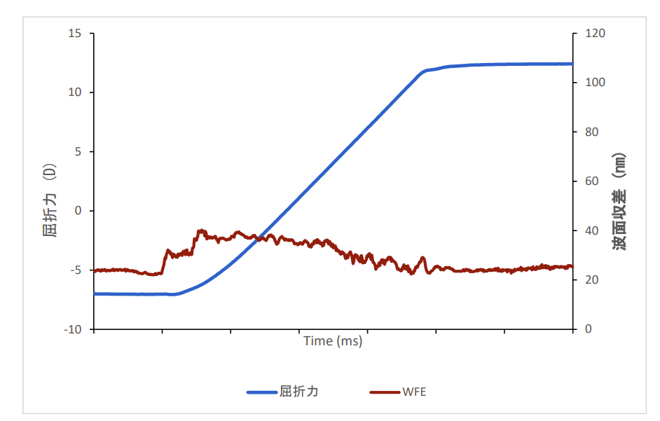

液体レンズ(Varioptic) による高付加価値レトロフィットの提案
回路線幅が原子数数十個分に達する先端ノードでは、光の波長が解像度を制限する「回折限界」が最大の敵となります。

電圧印加により水溶液と油の境界面の形を変化させ、ミリ秒単位でピントを調整します。


屈折力を流しながら連続撮影を行うため、スループットが劇的に向上します。

液体レンズは絞りを開放したまま、ms単位でピント位置を高速スキャン。明るさを犠牲にせず空間全体を把握します。